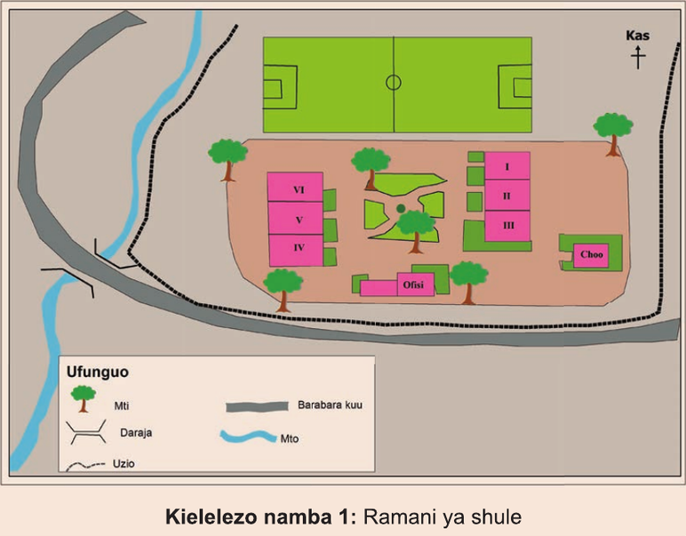

Kutumia ramani kubaini uelekeo na mahali
Chunguza Kielelezo namba 1, kisha Jibu maswali yanayofuata:

Kazi ya kufanya namba 1
1. Ni vitu gani vinapatikana Kaskazini mwa barabara kuu?
2. Madarasa yako upande gani wa uwanja wa mpira wa miguu?
3. Darasa la VI linapatikana upande gani wa Darasa la V?
4. Darasa la II linapatikana upande gani wa Darasa la IV?
5. Upande gani wa eneo la shule ambao hauna uzio?
Uelekeo na mahali katika ramani unaweza kubainishwa kwa kutumia alama ya uelekeo wa Kaskazini.
Alama ya uelekeo wa Kaskazini itakuongoza ni upande upi wa ramani upo Kaskazini, Kusini, Mashariki au Magharibi.
Hii itakuwezesha kubaini mahali vilipo vitu mbalimbali